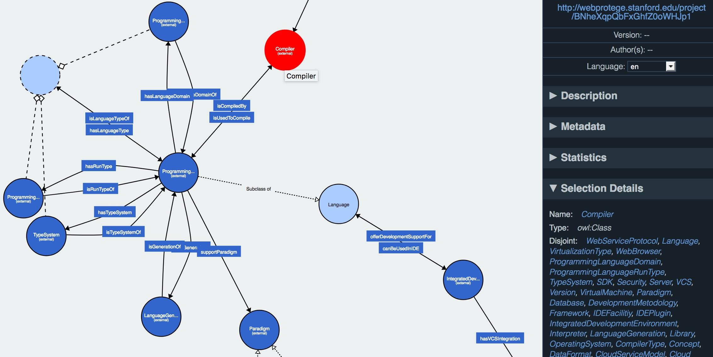
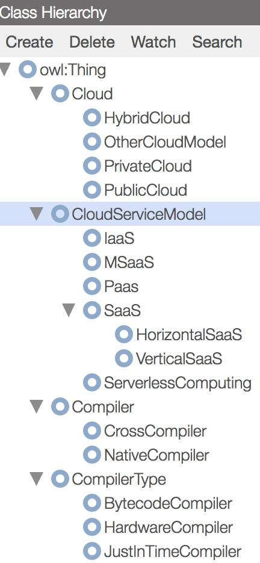
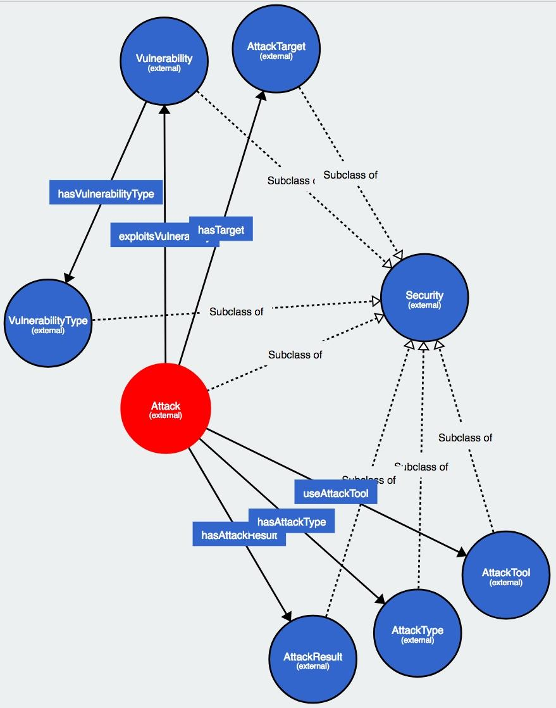
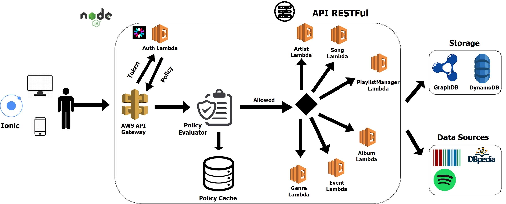
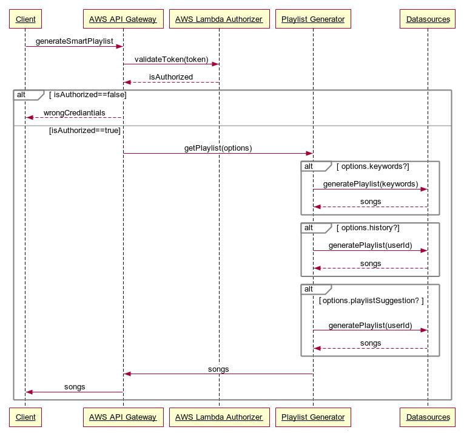
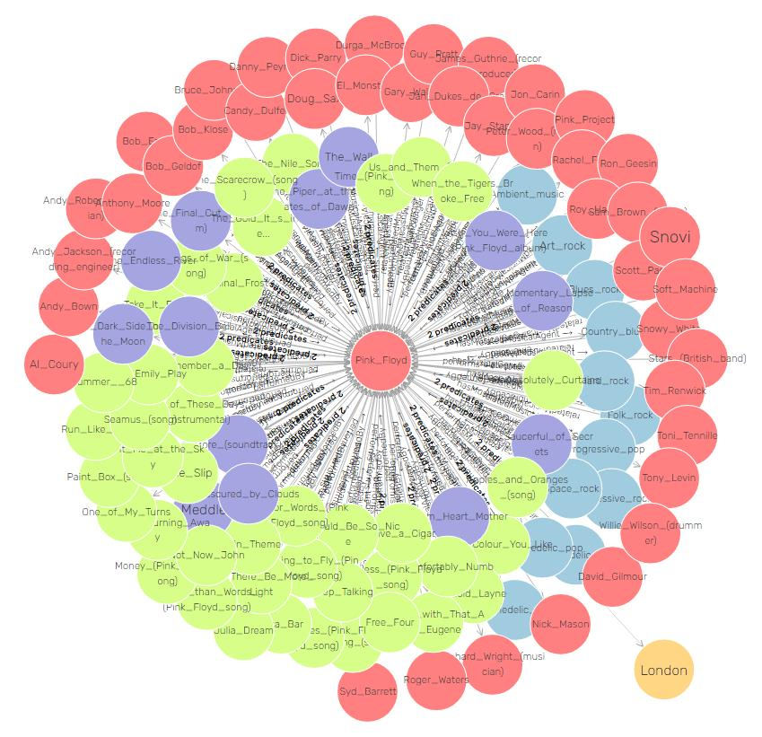

Data publicării: 12.02.2018
Autor articol: Sabin Buraga
Introducere
Articolul de față realizează o descriere succintă a două proiecte de interes selectate din grupul celor 20 de soluții concepute în primul semestru al anului universitar 2017/2018 de către studenții înscriși la disciplina “Dezvoltarea aplicațiilor Web” din cadrul programului de studii de master al Facultății de Informatică a Universității “Alexandru Ioan Cuza” din Iași.
Cerințele vizând maniera de realizare a unui proiect au fost expuse public pe situl dedicat materiei. În continuare, vom enumera principalele aspecte luate în considerație (Buraga, 2018):
- Proiectul a constat în realizarea unei aplicații (sistem software) aliniat(ă) problematicilor actuale privitoare la tehnologiile Web-ului social și semantic (Web of data). Implementarea efectivă s-a putut realiza indiferent de platforma hardware și/sau software, paradigma, limbajul ori limbajele de programare, framework-uri, biblioteci, API-uri publice, încurajându-se abordările open source și recurgerea la licențe deschise.
- Dezvoltarea și exploatarea în practică a proiectului s-au efectuat conform principiilor curente ale ingineriei Web, utilizându-se – evident – un sistem modern de management al codului-sursă precum Bitbucket sau Github.
- Pentru asigurarea interoperabilității, interconectării cu alte seturi de date, inclusiv interogarea facilă și realizarea de raționamente automate, datele/cunoștințele gestionate de fiecare aplicație propusă au fost stocate în format RDF (Resource Description Framework) pe baza unor modele de cunoștințe (vocabulare de termeni, taxonomii, lexicoane, ontologii) standardizate în sisteme de gestiune de tip triplestore. Interogările s-au efectuat via un punct terminal SPARQL (SPARQL Protocol and RDF Query Language) – a se consulta și Allemang & Hendler (2011) și Yu (2014).
- Reprezentările resurselor generate de aplicație și procesate la nivel de client Web au inclus construcții semantice exprimate prin scheme de microdate HTML5 – a se vedea inițiativa schema.org – și/sau RDFa (posibilitatea includerii de aserțiuni de triple RDF direct în HTML).
Desigur, printre altele, s-au punctat: creativitatea soluției, maniera de lucru în echipă (aspect obligatoriu), folosirea șabloanelor de proiectare a cunoștințelor (i.e. ontology design patterns), adoptarea tehnologiilor “în nori” (cloud computing), maturitatea implementării. O echipă a putut fi compusă din 2–4 persoane, iar o anumită propunere de temă de proiect a fost aleasă de maxim 3 echipe.
WADO (Web Application Development Ontology)
Primul proiect pe care-l descriem în continuare vizează crearea unui model conceptual referitor la artefacte software specifice aplicațiilor Web.
S-au luat în considerație cele mai importante aspecte vizând procesele de dezvoltare a aplicațiilor Web: limbaje și paradigme de programare, arhitecturi și metodologii de dezvoltare. De asemenea, s-au modelat cunoștințele privitoare la diverse instrumente software ajutătoare specifice unui ecosistem (e.g., JavaScript, PHP, Python,…) – de la platforme de rulare (runtime), containere, sisteme de operare, mașini virtuale până la compilatoare, interpretoare, servere de aplicații, framework-uri, SDK-uri, biblioteci, componente, medii integrate de dezvoltare etc. Amănunte referitoare la ingineria programării sunt oferite de (Iftene, 2018).
Vizualizarea unui fragment din ontologia creată (aici, instrumentele specifice dezvoltării de aplicații) este ilustrată de figura de mai jos – pentru aceasta, s-a utilizat instrumentulWebVOWL disponibil la nivel de navigator Web. Această vizualizare adoptă notația vizuală VOWL (Lohmann, Negru, Haag & Ertl, 2014) la care a avut contribuții și Ștefan Negru (absolvent FII).

Un alt exemplu este cel referitor la ierarhia principalelor clase modelând anumite aspecte legate de cloud computing – a se vedea captura-ecran ce reprezintă un instantaneu al interacțiunii cu WebProtégé, o aplicație de editare de ontologii direct în browser-ul Web (Tudorache, Vendetti & Noy, 2008).

Un aspect important l-a avut și modelarea riscurilor de securitate și a posibilelor vulnerabilități pe care le poate prezenta un program. Pentru aceasta, s-au specificat clasele ilustrate în diagrama următoare: Security,Vulnerability, VulnerabilityType,Attack, AttackTarget, AttackTool, AttackResult.

Cazurile concrete au vizat depozitele de cod-sursă ale aplicațiilor găzduite de sistemul Github, popularea datelor efectuându-se pe baza GraphQL în cadrul Apache Jena Fuseki, un server de stocare a datelor RDF. Implementarea efectivă la nivel de backend s-a bazat pe Java.
Pentru alte detalii, se poate consulta depozitul Github public al proiectului implementat din echipa compusă din Mădălina Neghină (Masterul de Sisteme Distribuite), Andrei Iulian Juravle (Masterul de Optimizare Computațională), Alexandru Furculiță (Masterul de Optimizare Computațională) și Constantin Serediuc (Masterul de Optimizare Computațională).
MuSeR (Music Smart Enhancer)
A doua parte a articolului oferă anumite considerații privitoare la una dintre implementările proiectului MuSeR. Tema propune generarea de experiențe muzicale multiple, pe baza preferințelor utilizatorului și a unor servicii publice de profil precum Spotify și Spotkick. Aplicația trebuie să propună într-o manieră inteligentă de conexiuni dintre diverse formații muzicale sau melodii, în funcție de genul muzical, artist, coperta albumului, localizare geografică, termeni de conținut (tag-uri) și altele. De asemenea, se pot genera liste de producții muzicale conform istoricului redării pieselor favorite.
Din punct de vedere conceptual, ontologia creată a reutilizat diverse construcții existente în alte modele de cunoștințe – e.g., DBpedia Ontology, Music Ontology – pentru a exprima clase ca Artist, Album, Song, Playlist, Genre etc.
Arhitectura generală a sistemului implementat a recurs la tehnologii în “nori”, adoptând paradigme moderne precum microservicii, plus punctul de vedere fără server central (serverless) – pentru unele detalii a se parcurge prezentările oferite de Buraga (2018).

Această diagramă figurează arhitectura aplicației MuSeR, inclusiv instrumentele folosite:
- Ionic pentru crearea de interfețe-utilizator exploatabile pe clienți eterogeni,
- Amazon Web Services Lambda care facilitează crearea de (micro)servicii funcționale în cloud (FaaS – Functions As A Service),
- Node.js ca soluție de implementare,
- GraphDB pentru stocarea datelor RDF.
Figura de mai jos prezintă secvența de acțiuni realizate de aplicaței pentru generarea unei noi liste de melodii de interes.

Această generare se bazează pe relațiile descoperite între instanțele (indivizii) aparținând claselor mai sus menționate, conform grafului RDF creat. O exemplificare este dată de vizualizarea următoare, pentru entitatea “Pink Floyd” corespunzătoare binecunoscutului grup muzical.

Interacțiunea efectivă dintre un utilizator și aplicația client disponibilă pe sistemul Android este demonstrată de filmul disponibil la adresa http://www.youtube.com/watch?v=h_9rucyKUns.
Acest proiect a fost realizat de echipa formată din Ciprian Lila-Lazăr, Alexandru-Gabriel Cristea și Dan-Ștefan Cehan, studenți în anul I la Masterul de Ingineria Sistemelor Software. Alte amănunte tehnice, plus întreg codul-sursă sunt disponibile în depozitul Github aferent.
Concluzii
Lucrarea a pus la dispoziție două studii de caz care au descris cum modelele de cunoștințe exprimate cu ajutorul ontologiilor și a altor tehnologii specifice așa-numitului Web semantic pot fi folosite practic la dezvoltarea de aplicații Web, cu beneficii atât pentru utilizatorii finali, cât și pentru anumite categorii de (viitori) specialiști: programatori, ingineri software, ontologiști, experți în interacțiune om-calculator.
Referințe bibliografice
- Allemang, D., Hendler, J., Semantic Web for the Working Ontologist (2nd Edition), Morgan Kaufmann, 2011.
- Buraga, S., Dezvoltarea aplicațiilor Web (Web Application Development), Facultatea de Informatică, Universitatea “Alexandru Ioan Cuza” din Iasi, Romania, 2018: http://profs.info.uaic.ro/~busaco/teach/courses/wade/
- Iftene, A., Tehnici avansate de ingineria programării (Advanced Software Engineering Techniques), Facultatea de Informatică, Universitatea “Alexandru Ioan Cuza” din Iasi, Romania, 2018: http://profs.info.uaic.ro/~adiftene/Scoala/2018/ASET/index.htm
- Lila-Lazăr, C., Cristea, A., Cehan, D., MuSer Project, 2018: http://github.com/wade-muser
- Lohmann, S., Negru, S., Haag, F., & Ertl, T., “VOWL 2: User-Oriented Visualization of Ontologies”, International Conference on Knowledge Engineering and Knowledge Management, Springer, 2014.
- Neghină, M., Juravle, A., Furculiță, A., Serediuc, C., WADO Project, 2018: http://github.com/wadoteam
- Tudorache, T., Vendetti, J., Noy, N. F., “Web-Protege: A Lightweight OWL Ontology Editor for the Web”, OWLED Workshop, 2008: http://webont.org/owled/2008/papers/owled2008eu_submission_40.pdf
- Yu, L., A Developer’s Guide to the Semantic Web (2nd Edition), Springer, 2014.
- * * *, Amazon Web Services (AWS) Lambda Resources: http://aws.amazon.com/lambda/resources/
- * * *, Github’s GraphQL API: http://developer.github.com/v4/
- * * *, GraphQL: http://graphql.org/
- * * *, WebProtégé: http://protegewiki.stanford.edu/wiki/WebProtege
- * * *, WebVOWL: http://vowl.visualdataweb.org/webvowl.html